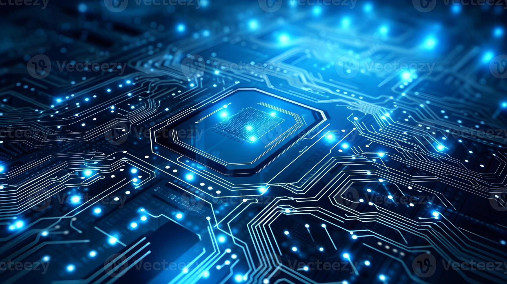

Introduction
Technology has become an important part of our daily lives. From smartphones and computers to artificial intelligence and the internet, technology is changing the way we learn, work, communicate, and solve problems.
As an Information Technology student, I am interested in understanding how technology works and how it can be used to create useful solutions. This blog shares some important aspects of technology and my journey of learning about it.
Why Technology Is Important
Some important benefits of technology are:
- It makes communication faster and easier.
- It provides access to information and education.
- It helps businesses improve their productivity.
- It helps us solve complex problems.
My Learning Goals
My main goals as an IT student are:
- Learn programming fundamentals.
- Build useful web projects.
- Understand databases and computer networks.
- Improve my problem-solving skills.
Useful Links
Learn more about technology from these resources:
Technology Around Us
Computers are one of the most useful technologies in our daily lives. They help us study, communicate, work, and access information.
Technology in Student Life
Technology is especially useful for students because it makes learning more flexible and interactive. Students can use computers and the internet to read study material, attend online classes, prepare presentations, practice programming, and communicate with teachers and classmates. Digital tools also help students organize their work and find information quickly.
However, technology should be used responsibly. Spending too much time online can reduce concentration, so students should maintain a balance between digital activities and other important parts of life. Learning how to use technology wisely is just as important as learning how the technology itself works.
Modern technology is also based on electronic circuits and powerful computing systems that continue to become faster and more efficient.
Technology in Student Life
Technology is especially useful for students because it makes learning more flexible and interactive. Students can use computers and the internet to read study material, attend online classes, prepare presentations, practice programming, and communicate with teachers and classmates. Digital tools also help students organize their work and find information quickly.
However, technology should be used responsibly. Spending too much time online can reduce concentration, so students should maintain a balance between digital activities and other important parts of life. Learning how to use technology wisely is just as important as learning how the technology itself works.

Technology and Its Uses
| Technology | Use | Benefit |
|---|---|---|
| Computer | Education and Work | Fast Information Processing |
| Internet | Communication | Easy Access to Information |
| Artificial Intelligence | Automation | Smart Decision Making |
Conclusion
Technology has changed the way we live, learn, and work. As an Information Technology student, I believe that learning technology is not only about using computers but also about understanding how digital solutions can solve real-world problems. With continuous learning and practice, I hope to develop useful skills and create meaningful technology-based solutions.